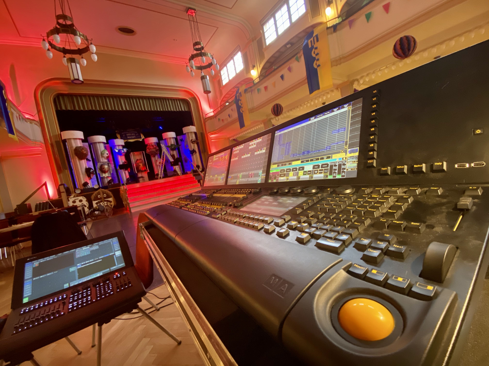
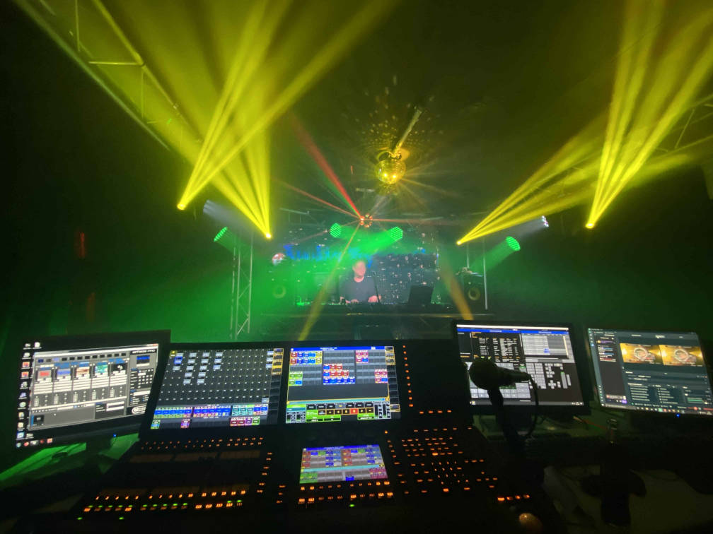
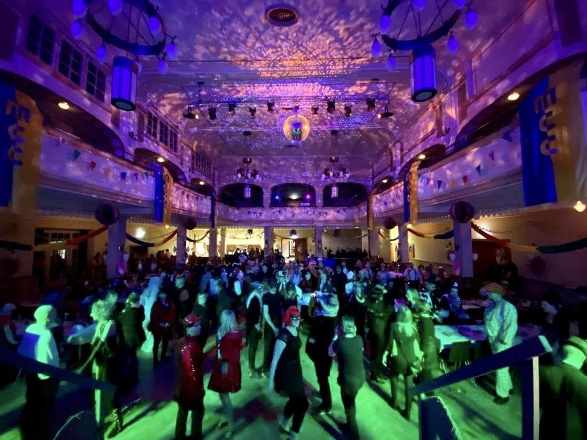

Unser Portfolio teilt sich in drei Bereiche auf. Bei Fragen kontaktieren Sie uns einfach unter mail@die-deymanns.de. Wir freuen uns auf Sie, denn zusammen rockt es einfach mehr !
Tontechnik

-
Live Sound für FoH und Monitor
-
Touring als Mischer ( FoH , Monitor )
-
Betreuung von Bands / Musikern auf Liveveranstaltungen
-
Systemtechnik
Lichttechnik
-
Programmierung und Lichtdesign

-
Licht Operating

-
Touring als Operator (Licht)
Programmierung / IT
-
Webseiten
Wenn Sie ihre eigene moderne Webseite haben möchten, die sich von anderen abhebt. Fragen Sie uns einfach an unter
mail@die-deymanns.de . Wir kennen uns mit HTML5, PHP, Javascript, CSS gut aus, um Ihren Wünschen und Vorstellungen zu entsprechen. Diese Seite ist übrigens von uns entworfen und veröffentlicht worden.Es ist möglich Dropdown Menüs zu erstellen, Animationen zu ermöglichen, die ohne extra Tools laufen.
Benutzerdefinierte Cookies, die zur Erleichterung wiederkehrender Besucher dienen, können wir gerne einbauen.
-
Datenbanken (Kundenverwaltung, eigener Shop)
Arbeiten Sie mit vielen Textdateien oder läuft ihre Liste mit Excel-Tabellen schon über? Wir freuen uns Ihnen ein Angebot zu machen, um dieser zeitaufwendigen Pflege ein Ende zu schaffen. Alles aus einer Hand und mit leichten Links direkt abrufbar ohne doppelte Daten zu erfassen.
Zentrale Datenverarbeitung mit Datensicherung ist auf jeden Fall die bessere Lösung.
Wir erstellen auch größere Projekte wie eine hausgemachte Kundenverwaltung, Artikel und Lagerverwaltung, oder gar Ihren eigenen Shop.
-
Firmentools (Import/Export, Portierung von Daten)
Haben Sie noch eine alte Datenbank und möchten diese in die neue exportieren? Kein Problem für uns.
Wir portieren auch vorhandene Tabellen und Textdateien in einer Datenbank Ihrer Wahl. Idealerweise nutzen Sie von uns erstellte Datenbanken.
-
Programme (z.B. Lagerverwaltung)
Unsere meisten Programme von uns basieren auf PHP/HTML. Wünschen Sie andere Formate wie C++, C# oder Java, lässt sich eine Einigung finden.
-
Datensicherung (Backups)
Es gibt nichts Wichtigeres in einen Betrieb als die Sicherung von Daten. Fällt Ihr Server aus oder werden Daten aus irgendwelchen Gründen zerstört, sei es durch Festplattenausfall, Brand oder einen Datenangriff von außen. So ist es immer erleichternd, wenn man sich seine Daten zurückholen kann.
Oder was sagen Sie dazu?Wir bieten eine Lösung, die für Sie automatisch abläuft, und auf Wunsch online oder innerbetrieblich.
z. B.
Lagerung auf Externen Platten jeden Tag eine andere je 30 Tage Überlappung.
Lagerung Online auf unseren Platten, die dann nochmals abgesichert werden.